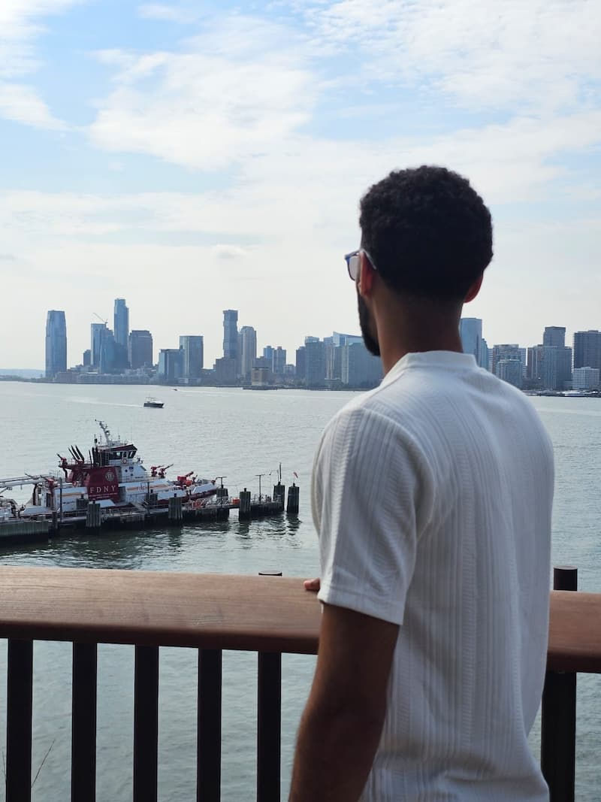

Joshua Jimenez Peralta | WDD 130
Joshua Jimenez is a kind and dedicated young man from the Dominican Republic who values faith, family, and friendship. He served a mission in Mexico, where he strengthened his love for helping others and sharing his beliefs. Joshua enjoys singing, as music allows him to express his emotions and connect with people around him. He cherishes spending time with his family and friends, creating meaningful memories together. His positive attitude and caring nature make him someone who brings warmth and joy to everyone he meets.